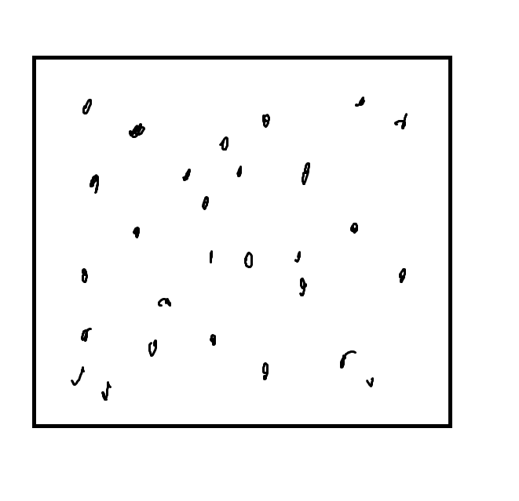
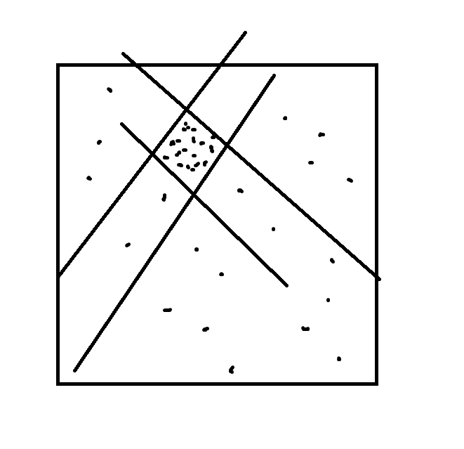
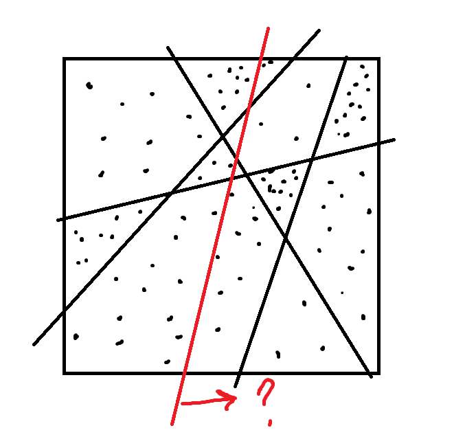

Notes from presentation by Russell Impagliazzo at the Simons Working Group on Learning Models of Mathematical Objects.
Prepared by Holden Lee.
Background¶
A theme that cuts across many domains of computer science and mathematics is to find simple representations of complex mathematical objects such as graphs, functions, or distributions on data. These representations need to capture how the object interacts with a class of tests, and to approximately determine the outcome of these tests.
For example, in machine learning, the object might be a distribution on data points, high dimensional real vectors, and the tests might be half-spaces. The goal would be to learn a simple representation of the data that determines the probability of any half-space or possibly intersections of half spaces. In computational complexity, the object might be a Boolean function or distribution on strings, and the tests are functions of low circuit complexity. In graph theory, the object is a large graph, and the tests are the cuts In the graph; the representation should determine approximately the size of any cut. In additive combinatorics, the object might be a function or distribution over an Abelian group, and the tests might be correlations with linear functions or polynomials.
The focus of the working group is to understand the common elements that underlie results in all of these areas, to use the connections between them to make existential results algorithmic, and to then use algorithmic versions of these results for new purposes. For example, can we use boosting, a technique from supervised learning, in an unsupervised context? Can we characterize the pseudo-entropy of distributions, a concept arising in cryptography? Do the properties of dense graphs “relativize” to sub-graphs of expanders?
In particular, we’ll start from boosting, a technique in machine learning to go from weak learning to strong learning, i.e., taking an algorithm that learns a function only with a small correlation and making one that learns the function on almost all inputs. We’ll show how boosting implies a general Hardcore Distribution Lemma, showing that any function that cannot be \(1-\delta\) approximated by simple functions has a sub-distribution of size \(\delta\) where it has almost no correlation with simple functions. By starting from boosting, we will be able to show a constructive version of this lemma. From the Hardcore Distribution lemma, we’ll derive the Dense Model Theorem used by Green and Tao to show arbitrarily long arithmetic progressions in the primes. Again, by starting with boosting, we get a general algorithmic version of DMT. This algorithmic version can then be used to derive a general Weak Regularity Theorem, with that of Frieze and Kannan and analogs for sparse graphs as a special case.
Hopefully, at this point, the working group will segue from known connections to new connections, e.g., is there a strong boosting that implies strong regularity? Can algorithmic regularity lemmas be used in ML?
We won’t assume any background and will develop everything from first principles using only simple calculations. Here’s an optional reading list, and some papers we might refer to.
Papers with results we’ll cover:
- Klivans and Servedio, Boosting and Hard-core Sets, FOCS 99.
- Omer Reingold, Luca Trevisan, Madhur Tulsiani, Salil P. Vadhan: Dense Subsets of Pseudorandom Sets. FOCS 2008: 76-85
- Luca Trevisan, Madhur Tulsiani, Salil P. Vadhan: Regularity, Boosting, and Efficiently Simulating Every High-Entropy Distribution. IEEE Conference on Computational Complexity 2009: 126-136
- Russell Impagliazzo, Algorithmic Dense Model Theorems and Weak Regularity
- Sita Gakkhar Russell Impagliazzo Valentine Kabanets. Hardcore Measures, Dense Models and Low Complexity Approximations
Bibliography:
We won’t go through these papers explicitly, but they provide the context.
- Robert E. Schapire: The Strength of Weak Learnability (Extended Abstract). FOCS 1989: 28-33 : 01 June 2005 A desicion-theoretic generalization of on-line learning and an application to boosting Yoav Freund, Robert E. Schapire
- Yoav Freund, Robert E. Schapire: Game Theory, On-Line Prediction and Boosting. COLT 1996: 325-332
- Russell Impagliazzo: Hard-Core Distributions for Somewhat Hard Problems. FOCS 1995: 538-545
- Thomas Holenstein: Key agreement from weak bit agreement. STOC 2005: 664-673
- Boaz Barak, Ronen Shaltiel, Avi Wigderson: Computational Analogues of Entropy. RANDOM-APPROX 2003: 200-215
- Alan M. Frieze, Ravi Kannan: The Regularity Lemma and Approximation Schemes for Dense Problems. FOCS 1996: 12-20
- Noga Alon, Amin Coja-Oghlan, Hiêp Hàn, Mihyun Kang, Vojtech R’’odl, Mathias Schacht: Quasi-Randomness and Algorithmic Regularity for Graphs with General Degree Distributions. SIAM J. Comput. 39(6): 2336-2362(2010)
- Noga Alon, Assaf Naor: Approximating the Cut-Norm via Grothendieck’s Inequality. SIAM J. Comput. 35(4): 787-803 (2006)
- Green, Ben; Tao, Terence (2008). “The primes contain arbitrarily long arithmetic progressions”. Annals of Mathematics. 167 (2): 481–547.
- Tao, Terence; Ziegler, Tamar (2008). “The primes contain arbitrarily long polynomial progressions”. Acta Mathematica. 201 (2): 213–305
Big picture¶
| Boosting | Hard-core lemma | Dense model theorem | Weak regularity | ? | |
|---|---|---|---|---|---|
| Area | ML | CC, Derandom-ization | Additive combinatorics, CC | Graph theory | |
| Credit | Shapiro, Freund-Schapire | Impagliazzo, Holenstein | Green-Tao, Barak-Shaltiel-Wigderson | Szemeredi, Frieze-Kannan | |
| Get | Circuit computing \(f\) \(1-\delta\) of the time | ” | Proof that set isn’t \(\delta\)-dense | ” | |
| Unless | Weak learner fails on distribution of density \(\Omega(\delta)\) | Hard-core distribution | \(\Omega(\delta)\)-dense “model” indistinguishable from set | A model succinctly describing set | |
| Algorithm needed | Weak learner | ” | Distinguisher | ” |
We will take these theorems that we know to be true and show implications between them. Implications are due to...
- Boosting\(\implies\)Hard-core: Klivans and Servedio.
- Hard-core\(\implies\)Dense model: Impagliazzo
- Dense model\(\implies\)Weak regularity: Trevisan-Tulsiani-Vadhan, Reingold-Trevisan-Tulsiani-Vadhan
- Weak regularity\(\implies\)boosting: Trevisan-Tulsiani-Vadhan
What can we gain from looking at these connections?
Versatility: We can “retrofit” algorithms for one setting to get algorithms for the other settings.
For example, there are many boosting algorithms. When you follow this progression, you get different quantitative and qualitative versions of dense model theorem and regularity.
Algorithmic and constructive results:
There are nonconstructive versions using the min-max theorem for boosting, hard-core lemma, dense model theorem. We care about algorithmic versions.
Note that the algorithmic result that we care about is different in the different settings. In ML we care about getting a function that computes a function much of the time. On the other side, we’re really after the distribution where the weak learner fails, so that we get a model that succinctly describes the set.
We pay attention to do the reductions in an algorithmic, not just an existential way.
Using the dense model theorem for learning. Can we take a boosting technique and use it in an unsupervised way?
Generality: some things seem to be specific to a setting (density of graphs).
But actually, weak regularity doesn’t have anything to do with graphs being dense. We can relativize it to subgraphs of any graph. You can look at subgraphs of expanders, bipartite graphs, etc., and plug it in the same machinery. Likewise if you want to look at spectral norms rather than cuts.
Here is a cartoon:
Let \(X\) be a set, e.g. a distribution of points in the square. Let \(S\) be some distribution on points in \(X\).
Let \(\mathcal T\) be a set of classifiers, ex. a set of half-planes.
Let \(\mathcal F_K\mathcal T\) be boolean functions on \(K\) functions in \(\mathcal T\); here, partitions into polygonal regions by \(k\) half-planes.
We want to pre-process the distribution to be able to answer queries in \(\mathcal F_K\mathcal T\).
A violation of pseudo-density in this setting means there is a polygonal region with many more points from \(S\) than its volume, a “hot spot”.
\[\text{Area}(\text{region})< \delta \Pr_S (\text{region})-\varepsilon.\]A model is a partition into polygonal regions, with a probability distribution on regions. A simple model is defined by at most \(k\) lines.
The property of a model is that we can estimate half-space probabilities (“given any half-space, what proportion of points of \(S\) are on one side of it?”) by treating the points as if uniform within regions.
The algorithmic requirement in order to process the points to answer queries in \(\mathcal F_K\mathcal T\) is: given a set of points sampled from \(S\), and a set of points sampled from \(U\), find a half-space that approximately maximizes the difference in probabilities for these two sets. The equivalent in boosting is a distinguishing algorithm.
| Setting | Boosting | Hard-core measure | DMT/transference principle | Weak regularity |
|---|---|---|---|---|
| WL: \(|\mu_{i}|\ge2\delta\), \(\mu_{i}=g(h_{1,}\ldots,h_{i},f)\), \(h_{i+1}\in\mathcal{T}\), \(k\) iterations | Hardcore measure: \(\mu_{k}=g(h_{1},\ldots,h_{k},f)\), \(|\mu_{k}|\ge2\delta\) | Model: \(\mu_{k}=g(h_{1},\ldots,h_{k},o)\), \(|\mu_{k}|\ge\delta\) | ||
| SL: \(H=G(h_{1},\ldots,h_{k})\), \(\Pr[H=f]\ge1-\delta\) | Violation of hardness: \(H=G(h_{1},\ldots,h_{k})\), \(\Pr[H=f]>1-\delta\) | Violation of pseudo-density \(H=G(h_{1},\ldots,h_{k})\), \(H(U)\le\delta H(S)-\varepsilon\) | ||
| Assumption | WL never fails | Violation is impossible | Violation of pseudo-density is impossible | Actually dense |
| Conclusion | SL works | Hard-core measure exists, with same \(k\), \(G\), \(g\) | Model exists | Model exists |
| Algorithmic | Weak learner requirement | Approximately optimal weak learner | Approximately optimal distinguisher |
| Setting | Boosting | Hard-core measure | DMT/transference principle | Weak regularity |
|---|---|---|---|---|
| WL: \(|\mu_{i}|\ge2\delta\), \(\mu_{i}=g(h_{1,}\ldots,h_{i},f)\), \(h_{i+1}\in\mathcal{T}\), \(k\) iterations | Hardcore measure: \(\mu_{k}=g(h_{1},\ldots,h_{k},f)\), \(|\mu_{k}|\ge2\delta\) | Model: \(\mu_{k}=g(h_{1},\ldots,h_{k},o)\), \(|\mu_{k}|\ge\delta\) | ||
| SL: \(H=G(h_{1},\ldots,h_{k})\), \(\Pr[H=f]\ge1-\delta\) | Violation of hardness: \(H=G(h_{1},\ldots,h_{k})\), \(\Pr[H=f]>1-\delta\) | Violation of pseudo-density \(H=G(h_{1},\ldots,h_{k})\), \(H(U)\le\delta H(S)-\varepsilon\) | ||
| Assumption | WL never fails | Violation is impossible | Violation of pseudo-density is impossible | Actually dense |
| Conclusion | SL works | Hard-core measure exists, with same \(k\), \(G\), \(g\) | Model exists | Model exists |
| Algorithmic | Weak learner requirement | Approximately optimal weak learner | Approximately optimal distinguisher |
Some comments:
Boosting: Note it’s important that the \(\delta\) here is the same; many boosting algorithms meet this criterion. The theorem says that “either weak learner fails or strong learner works.”
In boosting, we think of weak learner as never failing.
Hard-core measure lemma: The lemma says that either we can find hard-core measure, on which no function can compute the function \(f\) more than \(1/2 +\delta\) of time; or find a function computing \(f\) \(1-\delta\) of the time.
Here, we want to come up with the measure. Although the logical format is the same as boosting, here we assume that the violations never happen (there is no strong learner). Every boosting algorithm gives hard-core measure lemma with the same parameters, and with exactly the same way of “gluing” the functions. Sometime you care about computational complexity of \(G\) but not of \(g\), or vice versa.
We can convert the hard-core measure theorem into the dense model theorem/transference principle (Tao and Ziegler).
Here, we have a distribution we’re trying to model. Either the distribution has pseudo-density property— there isn’t a violation that’s definable from \(k\) different properties from hypothesis class, where violation means that the expected value is much smaller on \(U\) than on \(S\)—or we get a model of density \(\ge \delta\). Assuming that violation of pseudo-density does not happen, we get a model.
Weak regularity is just DMT except the distribution actually is dense. It’s not so interesting that it has a dense model.
What we get is that the dense model you get is simple, definable in terms of a small number of basic hypotheses.
Sometimes we care about simplicity in the model, and sometimes simplicity in \(G\).
Note the \(k\) is the same throughout. Reductions preserves \(k\), and the functions \(h_i, G\).
We don’t only have the fact that boosting implies hard-core lemma implies regularity lemma. We have the stronger result that whatever boosting algorithm you give me, I get a hard-core lemma and regularity lemma with the same parameters and algorithm. Thus we can pick the boosting algorithm that gives the best results for our application.
Setup¶
First we discuss the PAC learning model.
Let \(U\) be a set, and by abuse of notation, also a distribution on that set. (Think of \(U\) as the universe, the set of possible inputs.) For simplicity, take the distribution to be uniform. Let \(f:U\to \{0,1\}\) be a boolean function. A learning algorithm can request any number of points \((x,f(x))\) where \(x\sim U\). The goal is to find a hypothesis \(h\) such that
A for \((U,f)\) with hypothesis class \(\mathcal H\) is an algorithm such that given samples \((x,f(x)), x\sim U\), outputs \(h\in \mathcal H\) (with high probability) such that
(Typically, we say that the probability of success is \(1-\varepsilon\), ask for a strong learner for all \(f\in \mathcal F\), and require it to run in time \(\operatorname{poly}(1/\varepsilon, 1/\delta)\).)
In boosting, we assume that we have weak learners.
A \(\varepsilon\)- for \((\mu, f)\) with hypothesis class \(\mathcal H\) is an algorithm such that given \((x,f(x)), x\sim \mu\), outputs \(h\) (with high probability) such that
It only has to output a function that is somewhat correlated with the right answer. Typically, we ask the weak learner to work on any distribution \(\mu\) satisfying some assumptions.
In order to use a weak learner, we construct a routine that subsamples the distribution \(U\) to pass to pass to the weak learner.
Let \(\mu:U\to [0,1]\). Define the probability distribution [1]
Think of this as rejection sampling: pick \(x\sim U\), keep it with probability in \([0,1]\), or else throw if back and repeat.
In order for this sampling to be efficient, we need \(\mu\) to not be too small.
Define the of \(\mu\) in \(U\) to be
We will use weak learners in the following context.
We will only run weak learners on distributions whose density is not too small (the dependence on \(\delta\) is \(|\mu|=\Omega(\delta)\)). We don’t want to run a weak learner on a distribution of very low density, because the time to simulate the distribution is inversely proportional to the density.
We ask the weak learners to output a function in a given class \(h\in \mathcal T\).
Then it will turn out that that both the measures that we run the weak learners on, and the final hypothesis, will be describable using \(\mathcal F_l \mathcal T\) (see below), for some class \(\mathcal F\).
Say that a set \(\mathcal T\) of functions \(U\to \{0,1\}\) form a class if \(f\in \mathcal T\) implies \(1-f \in \mathcal T\).
Let \(\mathcal F\) be a class of boolean functions. Define the class of functions
Boosting and the Hard-core lemma¶
The first boosting algorithm we give is totally ridiculous from the ML point of view. For people who work on weak regularity on graphs this is the natural version, and leads to the standard versions of results.
We will take \(\mathcal F\) to be the set of all boolean functions, so given hypotheses \(h_1,\ldots, h_k\), we can choose the best predictor using \(h_1(x),\ldots, h_k(x)\).
[Boosting with decision trees][thm:boosting] Let \(U\) be a distribution, \(\mathcal T\) a class of boolean functions \(U\to \{0,1\}\), \(\mathcal F\) the class of all boolean functions. Let \(f:U\to \{0,1\}\) be a given function (which we are trying to learn).
Suppose that there is a \(\delta\)-weak learner such that given any distribution \(\mu\) on \(U\) with \(|\mu|\ge 2\delta\), it produces \(h\in \mathcal T\) such that
\[\Pr_{x\sim \mu} [h(x) = f(x)] \ge \frac{1}{2}+ \varepsilon.\]Then there is a strong learner that produces \(h\in \mathcal F_k\mathcal T\) with \(k\le\lceil 1/\varepsilon^2\delta^2\rceil\) such that [2]
\[\Pr_{x\sim U} [h(x) = f(x)]\ge 1-\delta.\]
[Hard-core lemma] [thm:hardcore] Let \(U\) be a distribution, \(\mathcal T\) a class of boolean functions \(U\to \{0,1\}\), \(\mathcal F\) the class of all boolean functions.
Then either
There exists \(h\in \mathcal F_k \mathcal T\) such that
\[\Pr_{x\sim U} [h(x)=f(x)] \ge 1-\delta,\]where \(k \le 1/\varepsilon^2\delta^2\), or
(There exists a hard-core distribution.) There exists \(|\mu|\ge 2\delta\) on \(U\), such that for all \(h\in \mathcal T\),
\[\Pr_{x\sim \mu}[h(x) = f(x)] \le \frac{1}{2}+\varepsilon.\]
Note it is important for us to keep track of the size of the hardcore distribution, which is \(\ge 2\delta\) here. Different boosting algorithms will give the result for different classes of functions \(\mathcal F\).
[Proof of hard-core lemma [thm:hardcore] from boosting [thm:boosting]] Let weak learner be exhaustive search over \(\mathcal T\). The weak learner operates on distributions \(|\mu_i|\ge 2\delta\). If it always produces \(h_i\) with bias \(\ge \delta\), then continue and obtain the strong learner: we get some \(H\in \mathcal F_k \mathcal T\) such that \(H(x)=f(x)\) with probability \(1-\delta\).
If at some step \(i\) our exhaustive search algorithm gets stuck, we get a distribution \(\mu_i\) that’s hard-core.
Dense model theorem¶
For a set \(S\subseteq U\) and a function \(T:U \to \{0,1\}\), let \(T(S):=\operatorname{E}_{x\in S} T(x)\). (For a measure \(\mu: U\to [0,1]\), also write \(T(\mu) = \operatorname{E}_{x\sim \mu} T(x)\).)
Let \(S\subseteq U\) be a subset, and let \(\mathcal T\) be a set of tests. \(S\) is if for all \(T\in \mathcal T\),
Think of saying that the tests \(\mathcal T\) don’t reveal that the set \(S\) is small.
- One way of being pseudo-dense is to actually be dense.
- Another, one step removed, is that there’s a set \(R\) (or more generally, a measure \(\mu\)) that’s indistibguishable from \(S\) by \(\mathcal T\), and such that \(R\) occupies at least a \(\delta\) fraction of \(U\).
For two distributions \(\mu_1,\mu_2\) on \(U\), we say that \(\mu_1,\mu_2\) are indistinguishable by tests in \(\mathcal T\) up to \(\varepsilon\), written \(\mu_1 \sim_{\mathcal T} \mu_2\) within \(\varepsilon\), if for every \(T\in \mathcal T\),
[Dense model theorem][thm:dmt] Let \(\mathcal T\) be a class of tests \(U\to \{0,1\}\).
If \(S\) is \((\varepsilon,\delta)\)-pseudodense against \(F_k\mathcal T\), \(k=O(1/\varepsilon^2\delta^2)\) then there exists \(\mu\), \(\mu\in F_k\cal T\) such that \(|\mu|\ge \frac{\delta}{1+\delta}-O(\varepsilon)\) and \(D_\mu\sim_{\cal T} S\) to within \(O(\varepsilon/\delta)\).
The idea in the proof is to use the Hard-core lemma, with the hard function being membership in \(S\).
Let \(U'\) be the following distribution: let \(\delta'=\frac{\delta}{1+\delta}\) and
- with probability \(\delta'\), take \(x\in S\) and output \((0,x)\)
- with probability \(1-\delta'\), take \(x\in U\) and output \((1,x)\).
Define a test \(T\in \mathcal T\) to operate on an example \((y, x)\) by \(T(y,x)=T(x)\). For \(T\in \mathcal F_k \mathcal T\),
No test in \(\mathcal F_k \mathcal T\) can be correct with probability \(>\delta'-\varepsilon\). By the Hard-core Lemma [thm:hardcore], there exists \(|\mu'|\ge 2(\delta'-\varepsilon)\) such that for any \(T\in \mathcal T\), \(\Pr_{(x,y) \sim U'}[T(x)=y]\le \frac{1}{2}+\varepsilon\).
In order for \(\mu'\) to be hardcore, it must be split approximately evenly between \(U\) and \(S\) (up to \(\varepsilon\)); otherwise; we could have an advantage by predicting constant 0 or 1. Thus each part has at least \(2(\delta'-\varepsilon) (1/2 - \varepsilon) = \delta'(1-O(\varepsilon/\delta))\) of the mass. Then
Proof for boosting¶
[Proof of Theorem [thm:boosting]] The algorithm is as follows. Let \(WL(\mu)\) denote the weak learner operating on \((\mu, f)\).
Let \(\mu_0\) be constant 1, \(i=0\).
While \(|\mu_i|\ge 2\delta\), do
\(h_{i+1}\mapsfrom WL(\mu_i)\).
Partition \(U\) according to values of \(h_1,\ldots,h_i\).
Let \(h_{1:i}(x):= (h_1(x),\ldots, h_i(x))\in \{0,1\}^i\), and let \(B_i(x)\) be the “block” that \(x\) is in,
\[B_i(x) = h_{1:i}^{-1}(h_{1:i}(x)) = \{y\in U : h_{1:i}(x)=h_{1:i}(y)\}.\]For a set \(B\), let \(\operatorname{Maj}(B)\) denote the majority value of \(f\) on \(B\).
Define \(\mu_{i+1}\) by
\[\begin{split}\mu_{i+1}(x) = \begin{cases} \frac{1-p_{\operatorname{Maj}, B_i(x)}}{p_{\operatorname{Maj}, B_i(x)}},&\text{if } f(x)=\operatorname{Maj}(B_i(x))\\ 1,&\text{otherwise} \end{cases}•\end{split}\]where \(p_{\operatorname{Maj},B} = \Pr(f(y) = \operatorname{Maj}(B)| y\in B)\), the proportion of the majority in \(B\).
\(i\mapsfrom i+1\).
Finally, return \(H_{i}(x) = \operatorname{Maj}({B_{i}(x)})\), i.e., look at the block that \(x\) is in, and choose the majority value.
Note that the measure \(\mu_{i+1}\) rebalances each block \(B_i\) such that conditioned on \(y\) being in a block \(B_i(x)\),
Indeed, we have
Note that if \(|\mu_{i+1}|\le 2\delta\), then \(\Pr_{x\in X}[H_i=f]\ge 1-\delta\), and we are done. (We stop before we have to apply the weak learner to a distribution of density \(<\delta\).)
We need to show this method terminates in a bounded number of steps.
Consider the potential function
(Think of \(B_i\) as a partition; for a partition, \(\operatorname{E}[f|P]\) is a function of \(x\) that takes \(x\) to the average value in the atom of the partition that contains \(x\).) Note this have value in \([0,1]\) and is maximized if \(f\) is constant on every block. We show every iteration increases this potential function by at least a fixed amount, \((\varepsilon\delta)^2\). Fix a block \(B\) in the partition. Define \(p,q,\alpha_+,\alpha_-,p_0,p_1\) as follows.
Assume WLOG that \(\operatorname{Maj}(B_i(x))=1\). (Otherwise the LHS is smaller.)
• Because \(\varphi_i\) is always in \([0,1]\), the number of iterations is at most \(k\le (\delta \varepsilon)^2\).
Comments, Regularity lemmas¶
Some comments:
All you get from this proof is a decision tree; the complexity is exponential in \(k\). This is a bug, not a feature.
In complexity terms, we don’t get good hard-core measure, because the circuit size for the outer function \(G\) is \(2^k\). A better boosting algorithm would give \(G\) have smaller complexity. If your stopping point is the hard-core lemma, this is not the boosting algorithm you want. For the dense model theorem, this is fine because all you care about is size of \(k\), not the complexity of \(G\).
There is another boosting algorithm which gives a weighted majority function, which is a simpler function. A weighted majority can be converted into a decision tree, but not vice versa.
This potential function matches this boosting algorithm. Other boosting algorithms can be analyzed with other potential functions. This is like the potential function used most in graph theory. Key property: you can’t make negative progress; you always go forwards.
For Szemeredi regularity, we need a stronger boosting theorem. Suppose we get stuck at some step: no function correlates globally, but there are many blocks where we can find functions that correlate with the function inside that block. If in \(\varepsilon\) fraction of blocks we find functions that correlate, partition them based on all the values of these functions, and repeat.
In one step we’ve gone from order of \(2^k\) to order of \(2^{2^k}\) buckets, and increased the potential function by a polynomial in terms of \(\varepsilon,\delta\). This is a familiar argument; we can only go \(\frac{1}{\varepsilon}\) iterations before we terminate. This time, the number of sets is a tower depending on \(\varepsilon\).
Regularity lemmas:
Fix a set of vertices \(V\) of set \(n\). Let \(U\) be edges in complete graph on \(V\). (We can also consider the case when \(U\) is not the complete graph, ex. \(U\) is the edges in \(d\)-regular expander on \(V\).)
The underlying set we care about is the set of cuts defined by \(A,B\subseteq V\) where \(A\cap B=\phi\); there are \(3^k\) of them.
If \(|E|\ge \delta \binom n2\), the generic regularity lemma says there exists \(\mu=G(T_1,\ldots, T_k)\), where \(k=O(1/\varepsilon^2\delta^2)\), that is a good predictor the number of edges of any cut in the graph. Use the \(T\)’s to divide the vertices into \(3^k\) subsets such that \(\mu\) is a constant on every pair of subsets.
\[\frac{E_G(A,B)}{|E_G|} \approx_\varepsilon \sum_{i,j} \mu_{ij} \frac{|A\cap A_i||B\cap B_j|}{|V|^2}.\]This is the weak regularity of Frieze-Kannan. For Szemeredi we need the stronger boosting lemma (see previous point).
We can also do something similar with \(G\) a subset of an expander. The expander mixing lemma gives an error term.
| [1] | When \(U\) is not uniform and has distribution \(u(x)\), this is \(\frac{\mu(x)u(x)}{\sum_{x'\in U} \mu(x')u(x')}\). |
| [2] | We ignore sample complexity here. In reality, because we only see \(U\) from samples, we need to think about generalization. If the VC-dimension of \(\mathcal T\) is \(d\), then the VC-dimension of \(\mathcal F_k\mathcal H\) is at most \(k^d\). In ML we don’t want to take \(\mathcal F\) to be the class of all boolean functions. For this theorem, let’s just assume we are actually given all pairs \((x,f(x))\). |